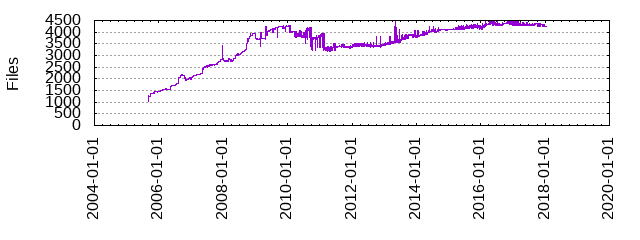

Files
- Total files
- 4249
- Total lines
- 408574
- Average file size
- 3781.24 bytes

| Extension | Files (%) | Lines (%) | Lines/file |
|---|
| 448 (10.54%) | 31556 (7.72%) | 70 |
| 0 | 70 (1.65%) | 9234 (2.26%) | 131 |
| 02 | 1 (0.02%) | 76 (0.02%) | 76 |
| 04_pulse | 1 (0.02%) | 2 (0.00%) | 2 |
| 1 | 16 (0.38%) | 2457 (0.60%) | 153 |
| 2 | 4 (0.09%) | 947 (0.23%) | 236 |
| 3 | 5 (0.12%) | 766 (0.19%) | 153 |
| 3b | 1 (0.02%) | 157 (0.04%) | 157 |
| 3c | 1 (0.02%) | 418 (0.10%) | 418 |
| 5 | 7 (0.16%) | 935 (0.23%) | 133 |
| 8 | 3 (0.07%) | 111 (0.03%) | 37 |
| 99_sshd | 1 (0.02%) | 2 (0.00%) | 2 |
| GPL | 2 (0.05%) | 678 (0.17%) | 339 |
| GPLv2 | 1 (0.02%) | 339 (0.08%) | 339 |
| LSB | 1 (0.02%) | 25 (0.01%) | 25 |
| MIT | 4 (0.09%) | 68 (0.02%) | 17 |
| README | 1 (0.02%) | 42 (0.01%) | 42 |
| ac | 2 (0.05%) | 60 (0.01%) | 30 |
| am | 1 (0.02%) | 73 (0.02%) | 73 |
| awk | 1 (0.02%) | 11 (0.00%) | 11 |
| bashrc | 1 (0.02%) | 16 (0.00%) | 16 |
| bb | 829 (19.51%) | 33519 (8.20%) | 40 |
| bbappend | 5 (0.12%) | 20 (0.00%) | 4 |
| bbclass | 189 (4.45%) | 30220 (7.40%) | 159 |
| bin | 1 (0.02%) | 11 (0.00%) | 11 |
| blacklist | 1 (0.02%) | 5 (0.00%) | 5 |
| busybox | 2 (0.05%) | 6 (0.00%) | 3 |
| bz2 | 1 (0.02%) | 84 (0.02%) | 84 |
| c | 11 (0.26%) | 1702 (0.42%) | 154 |
| cache | 1 (0.02%) | 4 (0.00%) | 4 |
| cfg | 13 (0.31%) | 95 (0.02%) | 7 |
| cmake | 1 (0.02%) | 22 (0.01%) | 22 |
| conf | 69 (1.62%) | 4046 (0.99%) | 58 |
| conf-sane | 1 (0.02%) | 7 (0.00%) | 7 |
| config | 1 (0.02%) | 9 (0.00%) | 9 |
| cpp | 1 (0.02%) | 2 (0.00%) | 2 |
| d | 1 (0.02%) | 87 (0.02%) | 87 |
| daily | 1 (0.02%) | 40 (0.01%) | 40 |
| default | 4 (0.09%) | 61 (0.01%) | 15 |
| desktop | 5 (0.12%) | 50 (0.01%) | 10 |
| diff | 49 (1.15%) | 4422 (1.08%) | 90 |
| dir | 1 (0.02%) | 410 (0.10%) | 410 |
| directory | 4 (0.09%) | 28 (0.01%) | 7 |
| example | 1 (0.02%) | 93 (0.02%) | 93 |
| extended | 1 (0.02%) | 392 (0.10%) | 392 |
| gz | 49 (1.15%) | 866 (0.21%) | 17 |
| h | 49 (1.15%) | 5488 (1.34%) | 112 |
| html | 2 (0.05%) | 336 (0.08%) | 168 |
| in | 16 (0.38%) | 1133 (0.28%) | 70 |
| inc | 272 (6.40%) | 20833 (5.10%) | 76 |
| init | 8 (0.19%) | 577 (0.14%) | 72 |
| js | 1 (0.02%) | 56 (0.01%) | 56 |
| json | 2 (0.05%) | 6 (0.00%) | 3 |
| lighttpd | 1 (0.02%) | 1 (0.00%) | 1 |
| m4 | 2 (0.05%) | 414 (0.10%) | 207 |
| make | 1 (0.02%) | 36 (0.01%) | 36 |
| mk | 2 (0.05%) | 83 (0.02%) | 41 |
| mount | 1 (0.02%) | 8 (0.00%) | 8 |
| net | 1 (0.02%) | 0 (0.00%) | 0 |
| order | 1 (0.02%) | 4 (0.00%) | 4 |
| pam | 2 (0.05%) | 8 (0.00%) | 4 |
| pamd | 2 (0.05%) | 7 (0.00%) | 3 |
| passphrase | 1 (0.02%) | 1 (0.00%) | 1 |
| patch | 1614 (37.99%) | 193565 (47.38%) | 119 |
| pl | 2 (0.05%) | 56 (0.01%) | 28 |
| png | 11 (0.26%) | 93 (0.02%) | 8 |
| prelink | 1 (0.02%) | 5 (0.00%) | 5 |
| profile | 1 (0.02%) | 11 (0.00%) | 11 |
| pub | 1 (0.02%) | 30 (0.01%) | 30 |
| py | 279 (6.57%) | 51189 (12.53%) | 183 |
| qemu | 1 (0.02%) | 15 (0.00%) | 15 |
| rpath | 1 (0.02%) | 684 (0.17%) | 684 |
| rules | 9 (0.21%) | 467 (0.11%) | 51 |
| sample | 3 (0.07%) | 255 (0.06%) | 85 |
| scc | 1 (0.02%) | 1 (0.00%) | 1 |
| script | 2 (0.05%) | 92 (0.02%) | 46 |
| secret | 1 (0.02%) | 59 (0.01%) | 59 |
| sed | 1 (0.02%) | 32 (0.01%) | 32 |
| service | 33 (0.78%) | 448 (0.11%) | 13 |
| sh | 68 (1.60%) | 8658 (2.12%) | 127 |
| sh-32 | 1 (0.02%) | 38 (0.01%) | 38 |
| sh-32-be | 1 (0.02%) | 1 (0.00%) | 1 |
| sh-32-le | 1 (0.02%) | 1 (0.00%) | 1 |
| sh-64 | 1 (0.02%) | 38 (0.01%) | 38 |
| sh-64-be | 1 (0.02%) | 1 (0.00%) | 1 |
| sh-64-le | 1 (0.02%) | 1 (0.00%) | 1 |
| sin | 1 (0.02%) | 19 (0.00%) | 19 |
| socket | 3 (0.07%) | 28 (0.01%) | 9 |
| state | 1 (0.02%) | 1 (0.00%) | 1 |
| tgz | 1 (0.02%) | 168 (0.04%) | 168 |
| theme | 1 (0.02%) | 7 (0.00%) | 7 |
| txt | 8 (0.19%) | 358 (0.09%) | 44 |
| upgraded | 2 (0.05%) | 39 (0.01%) | 19 |
| vmx | 1 (0.02%) | 46 (0.01%) | 46 |
| vmxf | 1 (0.02%) | 8 (0.00%) | 8 |
| wks | 12 (0.28%) | 113 (0.03%) | 9 |
| xinput | 2 (0.05%) | 3 (0.00%) | 1 |
| xml | 3 (0.07%) | 93 (0.02%) | 31 |